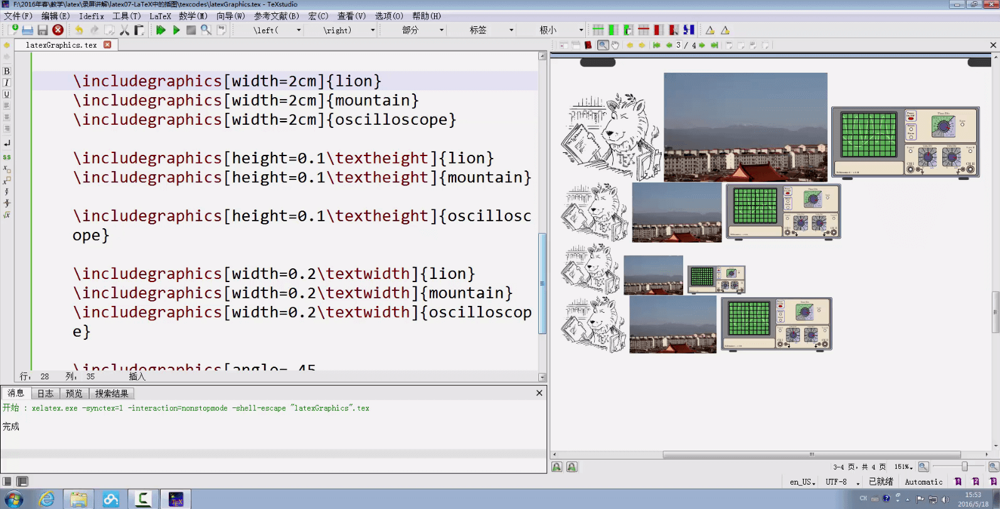

资源
课程
P1_latex01-LaTeX 环境的安装与配置
安装
仅安装 \TeX\ Live 即可，不要与Mik\TeX等混合安装！
C\TeX本身封装了Mik\TeX。
编译代码
创建test.tex文件，并输入如下内容：
1 2 3 4 5 6 7 \documentclass {article}\begin {document}\LaTeX \end {document}
在TERMINAL（终端）中输入latex test.tex以编译test.tex
1 2 3 4 5 6 7 8 9 10 11 12 PS D:\Study\0th-year-master\LateX\20230109> latex test.tex
此时会生成test.dvi文件，继续输入dvipdfmx test.dvi继续编译生成test.pdf文件：
1 2 3 4 PS D:\Study\0th-year-master\LateX\20230109> dvipdfmx test.dvi
或者直接输入xlelatex test.tex直接将test.tex编译生成test.pdf文件：
1 2 3 4 5 6 7 8 9 10 11 PS D:\Study\0th-year-master\LateX\20230109> xelatex test.tex
也可直接写一个批处理文件bulid.bat完成操作：
1 2 3 latex test.tex
或
1 2 xelatex test.tex
随后直接在TERMINAL（终端）中输入build命令完成编译
在VS Code中可以直接使用Ctrl+Alt+B编译
生成中文
首先需要保证tex文件使用的是utf-8编码。
使用\usepackage{ctex}引入宏包以支持中文。
1 2 3 4 5 6 7 8 9 \documentclass {article}\usepackage {ctex}\begin {document}\LaTeX \end {document}
使用 TeXstudio
P2_latex02-LaTeX 源文件的基本结构
1 2 3 4 5 6 7 8 9 10 11 12 13 14 \documentclass {article} \title {My First Document}\author {Nan Geng}\date {\today }\begin {document}\maketitle $ f(x)$ be defined by the formula$ $ f(x)=3x^ 2+x-1$ $ which is a polynomial of degree 2.\end {document}
分为导言区和正文区。
P3_latex03-LaTeX 中的中文处理办法
处理中文
确定编译器是否为XeLaTeX且编码是否为UTF-8。
在导言区使用
1 2 3 \documentclass{article}
或
以支持中文。
1 2 3 4 5 6 7 8 9 10 11 12 13 14 15 16 17 18 19 20 21 22 23 24 \documentclass {ctexart}\newcommand \degree {^ \circ }\title {\heiti 杂谈勾股定理}\author {张三}\date {\today }\begin {document}\maketitle $ ABC$ ，其中 $ \angle \degree $ ，则有：\begin {equation} ^ 2 = BC^ 2 + AC^ 2.\end {equation}\end {document}
在导言区使用\newcommand\degree{^\circ}定义\degree，否则会出现编译错误。
使用\begin{equation}和\end{equation}产生带编号的行间公式。
查看帮助文档
在TERMINAL（终端）中输入texdoc ctex命令：
输入texdoc lshort-zh命令：
P4_latex04-LaTeX 的字体字号设置
字体属性
在 \LaTeX 中，一个字体有 5 种属性：
字体编码
正文字体编码：OT1、T1、EU1 等
数学字体编码：OML、OMS、OMX 等
字体族
罗马字体 Roman Family \textrm：笔画起始处有装饰
无衬线字体 Sans Serif Family \textsf：笔画起始处无装饰
打字机字体 Typewriter Family \texttt：每个字符宽度相同，又称等宽字体
字体系列
字体形状
直立 Upright Shape
斜体 Italic Shape
伪斜体 Slanted Shape
小型大写 Small Caps Shape
字体大小
字体族设置
注意修饰符及其作用域范围：
1 2 3 4 5 6 7 8 9 10 11 12 13 14 15 16 \textrm {Roman Family}\textsf {Sans Serif Family}\texttt {Typewriter Family}\rmfamily Roman Family\sffamily Sans Serif Family}\ttfamily Typewriter Family}\sffamily who you are? you find self on everyone around.\ttfamily Are you wiser than others?
字体系列设置（粗细、宽度）
1 2 3 4 \textmd {Medium Series} \textbf {Boldface Series}\mdseries Medium Series} {\bfseries Boldface Series}
字体形状（直立、斜体、伪斜体、小型大写）
1 2 3 4 5 6 7 8 9 \textup {Upright Shape}\textit {Italic Shape}\textsl {Slanted Shape}\textsc {Small Caps Shape}\textup Upright Shape}\textit Italic Shape}\textsl Slanted Shape}\textsc Small Caps Shape}
中文字体
1 2 3 4 5 6 7 \songti 宋体}\heiti 黑体}\fangsong 仿宋}\kaishu 楷书}\textbf {粗体}是{\heiti 黑体}，\textit {斜体}是{\kaishu 楷体}。
字体大小
1 2 3 4 5 6 7 8 9 10 11 \tiny Hello}\\ \scriptsize Hello}\\ \footnotesize Hello}\\ \small Hello}\\ \normalsize Hello}\\ \large Hello}\\ \Large Hello}\\ \LARGE Hello}\\ \huge Hello}\\ \Huge Hello}\\
中文字号设置命令
自定义字体
过多的修饰符不符合\LaTeX的思想，使用\newcommand自定义字体。
导言区中：
1 \newcommand {\myfont }{\textbf {\textsf {Fancy Text}}}
会将正文区所有\myfont替换为\textbf{\textsf{Fancy Text}}
P5_latex05-LaTeX 文档的基本结构
分节
在正文区中，使用\section{}列提纲，分节，可以使用\subsection{}和\subsubsection{}继续分节。
1 2 3 4 5 6 7 8 9 10 11 12 13 14 15 16 17 \documentclass {article}\usepackage {ctex}\begin {document}\section {引言}\section {实验方法}\section {实验结果}\subsection {数据}\subsection {图表}\subsubsection {实验条件}\subsubsection {实验过程}\section {结论}\section {致谢}\end {document}
设置格式
使用\documentclass{ctexart}会更改格式，但是这个格式可以自行设置。
在导言区设置格式。将内容与格式分离，是\LaTeX的基本思想。
1 2 3 4 5 6 7 8 9 10 11 12 13 14 15 16 17 18 19 20 21 22 23 24 25 26 27 28 29 30 31 32 33 34 35 36 37 38 39 40 41 42 43 44 \documentclass {ctexart}\ctexset {\chinese {section}},\heiti \raggedright \zihao {-4}, \hspace {0pt},\arabic {subsection}},\heiti \zihao {5}, \hspace {0pt},\begin {document}\section {引言}\\ \par 很多研究机构和商业公司都陆续推出了自己的三维重建系统。\section {实验方法}\section {实验结果}\subsection {数据}\subsection {图表}\subsubsection {实验条件}\subsubsection {实验过程}\section {结论}\section {致谢}\end {document}
使用空行或\par可以另起一段
使用\\会换行，但是不会另起一段
设置目录
使用\documentclass{ctexbook}和\tableofcontents生成目录。
1 2 3 4 5 6 7 8 9 10 11 12 13 14 15 16 17 18 19 20 21 22 \documentclass [UTF8,a4paper,15pt,titlepage,oneside]{ctexbook}\begin {document}\tableofcontents \chapter {绪论}\section {引言}\\ \par 很多研究机构和商业公司都陆续推出了自己的三维重建系统。\section {实验方法}\section {实验结果}\subsection {数据}\subsection {图表}\section {结论}\section {致谢}\end {document}
P6_latex06-LaTeX 中的特殊字符
特殊字符
空白符号
空行分段，多个空行等同 1 个
自动缩进，绝对不能使用空格代替
英文中多个空格处理为 1 个空格，中文中空格将被忽略
汉字与其它字符的间距会自动由 XeLaTex 处理
禁止使用中文全角空格
\LaTeX控制符
排版符号
\TeX标志符号
引号
连字符
非英文字符
重音符号（以 o 为例）
1 2 3 4 5 6 7 8 9 10 11 12 13 14 15 16 17 18 19 20 21 22 23 24 25 26 27 28 29 30 31 32 33 34 35 36 37 38 39 40 41 42 43 44 45 46 47 48 49 50 51 52 53 54 55 56 57 58 59 60 61 62 63 64 65 66 67 68 69 70 71 72 73 74 75 76 \documentclass {article}\usepackage {ctex}\usepackage {xltxtra}\usepackage {texnames}\usepackage {mflogo}\begin {document}\section {空白符号}\quad b\qquad b\, b a\thinspace b\enspace b\ b\kern 1pc b\kern -1em b \hskip 1em b\hspace {35pt}b\hphantom {xyz}b\hfill b\section {\LaTeX 控制符}\# \$ \% \{ \} \~ {} \_ {} \^ {} \textbackslash \& \section {排版符号}\S \P \dag \ddag \copyright \pounds \section {\TeX 标志符号}\TeX {} \LaTeX {} \LaTeXe {}\XeLaTeX \AmSTeX {} \AmS -\LaTeX {}\BibTeX {} \LuaTeX {}\METAFONT {} \MF {} \MP {}\section {引号}\section {连字符}\section {非英文字符}\oe \OE \ae \AE \aa \AA \o \O \l \L \ss \SS !`?`\section {重音符号（以 o 为例）}\` o \' o \^ o \' 'o \~ o \= o \. o \u {o} \v {o} \H {o} \r {o} \t {o} \b {o} \c {o} \d {o}\end {document}
P7_latex07-LaTeX 中的插图

1 2 3 4 5 6 7 8 9 \documentclass {ctexart}\usepackage {graphicx}\graphicspath {{figures/}, {pics/}} \begin {document}\LaTeX {}中的插图：\includegraphics [scale=0.3]{lion}\end {document}
P8_latex08-LaTeX 中的表格
1 2 3 \begin {tabular}[<垂直对齐方式>]{<列格式说明>}& <表项> & ... & <表项> \\ \end {tabular}
用\\表示换行
用&表示不同的列
列格式说明：
l 本列左对齐c本列居中对齐r本列右对齐p{<宽>}本列宽度固定，能够自动换行
1 2 3 4 5 6 7 8 9 10 11 12 13 14 15 \documentclass {ctexart}\begin {document}\begin {tabular}{|l|c|c|c|p{1.5cm}|}\hline \hline & 语文 & 数学 & 外语 & 备注 \\ \hline & 87 & 100 & 93 & 优秀 \\ \hline & 75 & 64 & 52 & 补考另行通知 \\ \hline & 80 & 82 & 78 & \\ \hline \end {tabular}\end {document}
P9_latex09-LaTeX中的浮动体
要灵活地使用图像和表格的管理，还需要使用浮动体环境。包含figure浮动体环境和table浮动体环境。
浮动体:
实现灵活分页（避免无法分割的内容产生的页面留白）
给图表添加标题
交叉引用
figure环境（table环境与之类似）
1 2 3 \begin {figure}[<允许位置>]\end {figure}
<允许位置>参数（默认tbp）
h，此处（here）-代码所在的上下文位置t，页顶（top）-代码所在页面或之后页面的顶部b，页底（bottom）-代码所在页面或之后页面的底部p，独立一页（page）-浮动页面
标题控制(caption、bicaption等宏包)
并排与子图表(subcaption、subfig、floatrow等宏包
绕排(picinpar、wrapfig等宏包)
使用\ref{}和\label{}进行交叉引用，通常要编译两次才生效。
1 2 3 4 5 6 7 8 9 10 11 12 13 14 15 16 17 18 19 20 21 22 23 24 25 26 27 28 29 30 31 32 33 34 35 36 37 38 39 40 41 \documentclass {ctexart}\usepackage {graphicx}\graphicspath {{figures/}}\begin {document}\LaTeX {}中\TeX 系统的吉祥物---小狮子见图\ref {fig-lion}。\begin {figure}[htbp]\centering \includegraphics [scale=0.3]{lion}\caption {\TeX 系统的吉祥物---小狮子}\label {fig-lion}\end {figure}\ref {fig-mountain}）\begin {figure}[htbp]\centering \includegraphics [scale=0.3]{mountain}\caption {太白山}\label {fig-mountain}\end {figure}\LaTeX {}中也可以使用表\ref {tab-score}所示的表格。\begin {table}[h]\centering \caption {考试成绩单}\label {tab-score}\begin {tabular}{|l|c|c|c|p{1.5cm}|}\hline \hline & 语文 & 数学 & 外语 & 备注 \\ \hline & 87 & 100 & 93 & 优秀 \\ \hline & 75 & 64 & 52 & 补考另行通知 \\ \hline & 80 & 82 & 78 & \\ \hline \end {tabular}\end {table}\end {document}
P10_latex10-LaTeX数学公式初步
1 2 3 4 5 6 7 8 9 10 11 12 13 14 15 16 17 18 19 20 21 22 23 24 25 26 27 28 29 30 31 32 33 34 35 36 37 38 39 40 41 42 43 44 45 46 47 48 49 50 51 52 53 54 55 56 57 58 59 60 61 62 63 64 65 66 67 68 69 70 71 72 73 74 75 76 77 78 79 80 81 82 83 84 85 86 87 88 89 90 91 92 93 94 95 96 97 98 99 100 101 102 103 104 105 106 \documentclass {article}\usepackage {ctex}\usepackage {amsmath}\begin {document}\section {简介}\LaTeX {}将排版内容分为文本模式和数学模式。\section {行内公式}\subsection {美元符号}$ a+b=b+a$ ，如 $ 1+2=2+1=3$ 。\subsection {小括号}\( a+b=b+a\) ，如\( 1+2=2+1=3\) 。\subsection {math环境}\begin {math}a+b=b+a\end {math}，如\begin {math}1+2=2+1=3\end {math}。\section {上下标}\subsection {上标}$ 3x^ {20} - x + 2 = 0$ $ 3x^ {3x^ {20} - x + 2} - x + 2 = 0$ \subsection {下标}$ a_ 0, a_ 1, a_ 2$ $ a_ 0, a_ 1, a_ 2, ..., a_ {3x^ {20} - x + 2}$ \section {希腊字母}$ \alpha $ $ \beta $ $ \gamma $ $ \epsilon $ $ \pi $ $ \omega $ $ \Gamma $ $ \Delta $ $ \Theta $ $ \Pi $ $ \Omega $ $ \alpha ^ 3 + \beta ^ 2 + \gamma = 0$ \section {数学函数}$ \log $ $ \sin $ $ \cos $ $ \arcsin $ $ \arccos $ $ \arctan $ $ \ln $ $ \sin ^ 2x+\cos ^ 2x=1$ $ y=\arcsin x$ $ y=\sin ^ {-1}x$ $ y=\log _ 2x$ $ y=\ln x$ $ \sqrt {2}$ $ \sqrt {x^ 2+y^ 2}$ $ \sqrt {2+\sqrt {2}}$ $ \sqrt [4]{x}$ \section {分式}$ 3/4$ 。$ \frac {3}{4}$ 。$ \frac {x}{x^ 2 + x + 1}$ $ \frac {\sqrt {x-1}}{\sqrt {x+1}}$ $ \frac {1}{1 + \frac {1}{x}}$ $ \sqrt {\frac {x}{x^ 2 + x + 1}}$ \section {行间公式}\subsection {美元符号}$ $ a+b=b+a$ $ $ $ 1+2=2+1=3$ $ \subsection {中括号}\[ a+b=b+a\] \[ 1+2=2+1=3\] \subsection {displaymath环境}\begin {displaymath}\end {displaymath}\begin {displaymath}\end {displaymath}\subsection {自动编号公式equation环境}\ref {eq:commutative}\begin {equation}\label {eq:commutative}\end {equation}\subsection {不编号公式equation*环境} \ref {eq:commutative2}\begin {equation*}\label {eq:commutative2}\end {equation*}\end {document}
latex11-LaTeX数学公式的矩阵
矩阵环境：
1 2 3 4 5 6 7 8 9 10 11 12 13 14 15 16 17 18 19 20 21 22 23 24 25 26 27 28 29 30 31 32 33 34 35 36 37 38 39 40 41 42 43 44 45 46 47 48 49 50 51 52 53 54 55 56 57 58 59 60 61 62 63 64 65 66 67 68 69 70 71 72 73 74 75 76 77 78 79 80 81 82 83 84 85 86 87 88 89 90 91 92 93 94 95 96 97 98 99 100 101 102 103 104 105 106 107 108 109 110 111 112 113 114 115 116 117 118 119 120 121 122 123 124 125 126 127 128 129 130 131 132 133 134 135 136 137 138 139 140 141 142 143 144 145 146 147 148 149 150 151 152 153 154 155 156 157 158 159 \documentclass {ctexart}\usepackage {amsmath}\newcommand {\adots }{\mathinner {\mkern 2mu\raisebox {0.1em}{.}\mkern 2mu\raisebox {0.4em}{.}\mkern 2mu\raisebox {0.7em}{.}\mkern 1mu}}\begin {document}\section {matrix环境}\[ \begin {matrix}& 1 \\ & 0\end {matrix}\] \section {pmatrix环境}\[ \begin {pmatrix}& -1 \\ & 0\end {pmatrix}\] \section {bmatrix环境}\[ \begin {bmatrix}& -1 \\ & 0\end {bmatrix}\] \section {Bmatrix环境}\[ \begin {Bmatrix}& -1 \\ & 0\end {Bmatrix}\] \section {vmatrix环境}\[ \begin {vmatrix}& -1 \\ & 0\end {vmatrix}\] \section {Vmatrix环境}\[ \begin {Vmatrix}& -1 \\ & 0\end {Vmatrix}\] \section {可以使用上下标}\[ \begin {pmatrix}_ {11}^ 2 & a_ {12}^ 2 & a_ {13}^ 2 \\ & a_ {22} & a_ {23} \\ & 0 & a_ {33}\end {pmatrix}\] \section {常用省略号：$ \backslash $ dots，$ \backslash $ vdots，$ \backslash $ ddots}$ \backslash $ adots，需要手动定义。\[ \begin {bmatrix}_ {11} & \dots & a_ {1n} \\ \adots & \ddots & \vdots \\ & & a_ {nn}\end {bmatrix}_ {n \times n}\] \section {分块矩阵（矩阵嵌套）}\[ \begin {pmatrix}\begin {matrix}1& 0\\ 0& 1\end {matrix} & \text {\Large 0} \\ \text {\Large 0} & \begin {matrix} 1& 0\\ 0& -1\end {matrix}\end {pmatrix}\] \section {三角矩阵}\[ \begin {pmatrix}_ {11} & a_ {12} & \cdots & a_ {1n} \\ & a_ {22} & \cdots & a_ {2n} \\ & & \ddots & \vdots \\ \multicolumn {2}{c}{\raisebox {1.3ex}[0pt]{\Huge 0}} & & a_ {nn}\end {pmatrix}\] \section {跨列的省略号} \[ \begin {pmatrix}& \frac 12 & \dots & \frac 1n \\ \hdotsfor {4} \\ & frac m2 & \dots & \frac mn\end {pmatrix}\] \section {行内小矩阵（smallmatrix）环境}$ z = (x, y)$ 可也用矩阵\begin {math}\left (\begin {smallmatrix}& -y \\ & -x\end {smallmatrix}\right )\end {math}\section {array环境（类似于表格环境tabular）}\[ \begin {array}{r|r}\frac {1}{2} & 0 \\ \hline & -\frac a{bc} \\ \end {array}\] \section {用array环境构造复杂矩阵}\[ \begin {array}{c@{\hspace {-5pt}}l}\left (\begin {array}{ccc|ccc}& \cdots & a & b & \cdots & b \\ & \ddots & \vdots & \vdots & \adots \\ & a & b \\ \hline & & & c & \cdots & c \\ & & & \vdots & & \vdots \\ \multicolumn {3}{c|}{\raisebox {2ex}[0pt]{\Huge 0}} & c & \cdots & c\end {array}\right )\begin {array}{l}\left . \rule {0mm}{7mm}\right \} p \\ \\ \left .\rule {0mm}{7mm}\right \} q\end {array}\\ [-5pt]\begin {array}{cc}\underbrace {\rule {17mm}{0mm}}_ m & \underbrace {\rule {17mm}{0mm}}_ m\end {array}& \end {array}\] \end {document}
latex12-LaTeX数学公式的多行公式
1 2 3 4 5 6 7 8 9 10 11 12 13 14 15 16 17 18 19 20 21 22 23 24 25 26 27 28 29 30 31 32 33 34 35 36 37 38 39 40 41 42 43 44 45 46 47 48 49 50 51 52 53 54 55 56 \documentclass {ctexart}\usepackage {amsmath}\usepackage {amssymb}\begin {document}\section {gather 标准多行公式}\subsection {gather 带编号}\begin {gather}\\ \end {gather}\subsection {gather* 不带编号}\begin {gather*}\\ \times 5 = 5 \times 3\end {gather*}\subsection {在换行符前使用 notag 阻止编号}\begin {gather}^ 2 + 4^ 2 = 5^ 2 \notag \\ ^ 2 + 12^ 2 = 13^ 2 \notag \\ ^ 2 + b^ 2 = c^ 2\end {gather}\section {align 对齐多行公式}\subsection {align 带编号}\begin {align}& = t + \cos t + 1 \\ & = 2\sin t\end {align}\subsection {align* 不带编号}\begin {align*}& = t & x & = \cos t & x & =t \\ & = 2t & y & = \sin (t+1) & y & = \sin t\end {align*}\section {split 环境（对齐采用 align 环境的方式，编号在中间）}\begin {equation}\begin {split}\cos 2x & = \cos ^ 2x - \sin ^ 2x \\ & = 2\cos ^ 2x - 1\end {split}\end {equation}\section {cases 环境}\& 分割为两部分，通常表示值和后面的条件。\begin {equation}\begin {cases}& \text {如果 } x \in \mathbb {Q}; \\ & \text {如果 } x \in \mathbb {R}\setminus \mathbb {Q}.\end {cases}\end {equation}\end {document}
P13_latex13-LaTeX中的参考文献BibTex
直接在tex文件中管理
1 2 3 4 5 \begin {thebibliography}{99} \bibitem [记号]{引用标志}文献条目1\bibitem [记号]{引用标志}文献条目2\end {thebibliography}
其中文献条目包括：作者，题目，出版社，年代，版本，页码等。
引用时可以采用：\cite{引用标志1, 引用标志2, ...}
1 2 3 4 5 6 7 8 9 10 11 12 13 14 15 16 17 18 19 20 21 22 \documentclass {ctexart}\begin {document}\cite {article1} 引用一本书\cite {book1}等\begin {thebibliography}{99}\bibitem {article1}陈立辉,苏伟,蔡川,陈晓云.\emph {基于 LaTex 的 web 数学公式提取方法研究}[J]。计算机科学。2014(06)\bibitem {book1}william H.Press,Saul A. Teukolsky,William T. Vetterling,Brian P.Elannery,\emph {Numerical Recipes js Edition:\bibitem {latexGuide} Kopka Helmut, w.Daly Patrick,\emph {Guide to \LaTeX }, $ 4^ {th}$ Edition.\texttt {http://www.amazon.com}.\bibitem {latexMath} Graetzer George, \emph {Math Into \LaTeX },\end {thebibliography}\end {document}
使用 BibTeX
在test.bib文件中输入如下内容：
1 2 3 4 5 6 7 8 9 @book{mittelbach2004,\LaTex }} Companion},
需要多次编译：
1 2 3 4 5 6 7 8 \documentclass {ctexart}\bibliographystyle {plain} \begin {document}\cite {mittelbach2004}\bibliography {test}\end {document}
使用\bibliography{test}以引用test.bib
使用\cite{mittelbach2004}引用mittelbach2004
使用google学术或百度学术等获得bib格式文件：
P14_latex14-LaTeX中的参考文献BibLaTeX
试不出来orz…可能是bib文件本身有问题?
1 2 3 4 5 6 7 8 9 10 11 12 13 14 15 16 17 \documentclass {ctexart}\usepackage [style=caspervector,\addbibresource {test.bib}\begin {document}\cite {2016An}\parencite {2016Analyzing}\supercite {mittelbach2004}\printbibliography [title = {参考文献}] \end {document}
P15_latex15-LaTeX中的自定义命令和环境
\newcommand定义命令命令只能由字母组成，不能以\end开头
\newcommand<命令>[<参数个数>][<首参数默认值>]{<具体定义>}
定义命令和环境是进行\LaTeX格式定制、达成内容与格式分离目标的利器。使用自定义的命令和环境把字体、字号、缩进、对齐、间距等各种琐细的内容包装起来，赋以一个有意义的名字，可以使文挡结构清晰、代码整洁、易于维护。
在使用宏定义的功能时，要综合利用各种已有的命令、环境、变量等功能，事实上，前面所介绍的长度变量与盒子、字体字号等内容，大多并不直接出现在文档正文中，而主要都是用在实现各种结构化的宏定义里。
1 2 3 4 5 6 7 8 9 10 11 12 13 14 15 16 17 18 19 20 21 22 23 24 25 26 27 28 29 30 31 32 33 34 35 36 37 38 39 40 41 42 43 44 45 46 47 48 49 50 51 52 53 54 55 56 57 58 59 60 61 62 63 64 65 66 67 68 69 70 \documentclass {ctexart}\newcommand \PRC {People's Republic of \emph {China}}\newcommand \loves [2]{#1 喜欢 #2 }\newcommand \hatedby [2]{#2 不受 #1 喜欢}\newcommand \love [3][喜欢]{#2 #1 #3 }\renewcommand \abstractname {内容简介}\newenvironment {myabstract}[1][摘要]\small \begin {center}\bfseries #1 \end {center}\begin {quotation}}\end {quotation}}\newenvironment {Quotation}[1]\newcommand \quotesource {#1 }\begin {quotation}}\par \hfill ---《\textit {\quotesource }》\end {quotation}}\begin {document}\PRC \loves {猫儿}{鱼}\hatedby {猫儿}{萝卜}\love {猫儿}{鱼}\love [最爱]{猫儿}{鱼}\begin {abstract}\end {abstract}\begin {myabstract}\end {myabstract}\begin {Quotation}{易$ \cdot $ 乾}\end {Quotation}\end {document}